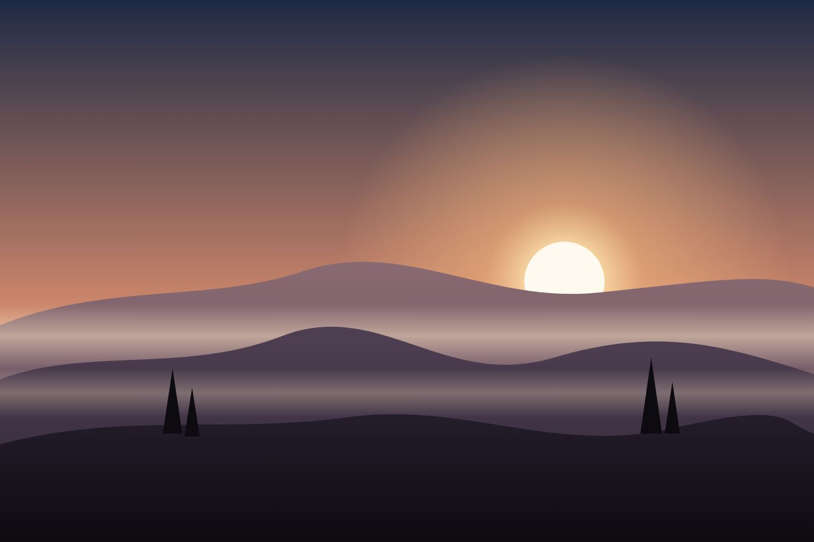

Au survol de la carte
La trame reste en place et se résout quand la carte est survolée ou que son lien reçoit le focus.
Voir la ficheSection précédente
Faites défiler : la photo apparaît en points de demi-teinte, puis se résout en image nette. Avec une souris, un compte-fils fait revenir la trame sous le pointeur.

Article principal
Un chapeau de deux ou trois lignes qui présente le sujet, avant le lien vers la suite.
Lire l'articleTrois réglages
La trame reste en place et se résout quand la carte est survolée ou que son lien reçoit le focus.
Voir la fiche
La même mécanique avec des lignes dont l'épaisseur suit la lumière de la photo.
Voir la ficheLa photo se résout à mesure qu'elle monte dans l'écran, et redevient trame en remontant.
Voir la ficheSection suivante
Sans WebGL, la photo s'ouvre à travers un masque de points ou de lignes ; en mode calme, elle est nette d'emblée.